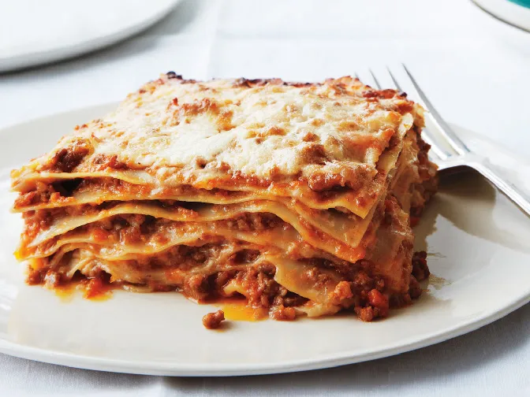

Lasagne

Homemade lasagna, Delicio!
Maybe you're not a nonna. And you didn't inherit a faded recipe for lasagna Bolognese from one, either. Not to worry. What matters is that this version of the Italian classic tastes as though it's been perfected over generations. The dish's complex sauce, rich béchamel, and—here's the secret—eight impossibly thin pasta layers (yes, homemade) create a brilliantly balanced bite. Time and dedication to each and every element turn this recipe into one that your grandkids (and friends) will be begging for.
Ingredients
Bolognese sauce
- 1 onion, chopped
- 1 medium carrot, peeled, chopped
- 1 celery stalk
- 2 Tbs olive oil
- 200g ground beef
- 200g gound pork
- 3-5 strips of panchetta or beacon
- Salt and pepper to taste
- 1 cup dry wine
- 1 cup whole milk
- 1 box of canned tomatoes (not the cheap ones)
- 3 cups stock (any kind will work)
Bechamel
- 5 Tbs butter
- 1/4 cup all-purpose flour
- 4 cups whole milk
- salt
- pinch of nutmeg
Assembly
- salt
- butter for the dish
- grated parmesan
- Dyed lasagne pasta plates
Step by step instructions
- Make the bolognese sauce
- Fry the meat, and when its cooked leave to the side in a bowl (try to get the sticky bits in the bottom of the pan)
- Fry the vegtables in olive oil and salt. If it burns add a splash of the wine and scrape off the bottom.
- Add tomatoes, wine, stock and milk. Cook for 10-15 minutes.
- Make the bechamel, while the bolognese sauce is cooking
- Add butter and flour to a pot and cook the raw taste out of the flour (2-3 minutes, medium heat).
- Turn down the heat, and add the milk.
- Cook until the milk thickens and add salt and nutmeg. Keep on low heat and stirr occationally.
- Assembly time!
- Start off with a layer of red sauce.
- Add layer of pasta plates.
- Add a layer of the bechamel sauce.
- Repeat the above 3 steps, finnish off with a layer of white sauce and put grated parmesan on top.
Enjoy!